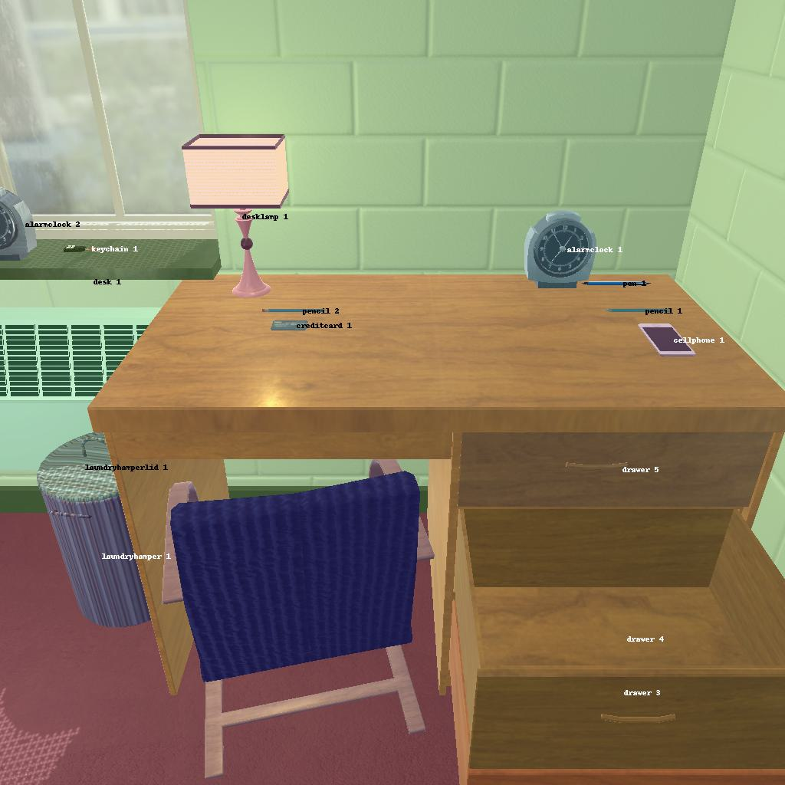
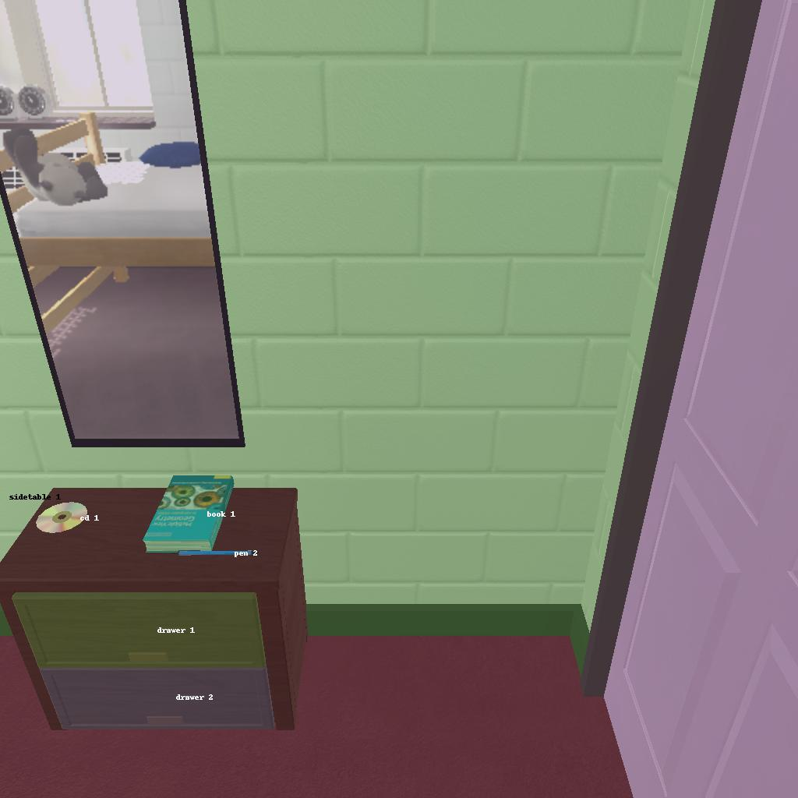

---------------------------------------------------------task: 8---------------------------------------------------------
--------------------------------------------------------------------------------------------------------------------------------------------------------------------
--------------------------------------------------------------------------------------------------------------------------------------------------------------------
Step:--------------------------------------------------------------------------10-------------------------------------------------------------------------------
----------------------------------------
VLM Prompt:
Image1:
Image2:
**Instruction**
1. Analyze the provided image to identify all visible household objects, focusing on those relevant to the task description "put some laptop on desk."
2. Use the analysis of the image and the task hint "The agent must find an object of the desired type, pick it up, find the correct location to place it, and put it down there." to answer the question: what is the most reasonable action in the choices for the task description "put some laptop on desk"?
4. Decide and write the answer using the template: The answer is: (i): , where i is the real number. If there is no desired object in the image, search every place based on **Initial Observation** to find the object. And if no one is exactly correct, choose a similar answer.
**Initial Observation**
You are in the middle of a room. Looking quickly around you, you can see bed (1), garbagecan (1), desk (1), sidetable (1), drawer (1-5), laundryhamper (1)
**Answer Choices**
(1): go to bed 1
(2): go to garbagecan 1
(3): go to desk 1
(4): go to sidetable 1
(5): go to drawer 2
(6): go to laundryhamper 1
(7): go to drawer 3
(8): go to drawer 4
(9): go to drawer 5
(10): open drawer 1
(11): close drawer 1
(12): examine drawer 1
**Answer**
Let's think step by step by following the instructions.
----------------------------------------
----------------------------------------
Original Response:
Firstly, the task is to "put some laptop on desk." From the initial observation, we know there is a desk (desk 1) in the room. Now, looking at Image 1, we can see desk 1, which currently does not have a laptop on it but has other items like pencils, a desk lamp, and an alarm clock. There is no laptop visible in either Image 1 or Image 2.
Since no laptop is visible on the desk or any other surfaces in the provided images, we must search every place based on the Initial Observation to find the laptop. The places we can search are the drawers (drawer 1-5), as laptops are typically stored in drawers when not in use.
Considering the most logical and efficient sequence of actions to find a laptop, we would start by opening the closest drawer to search inside. Drawer 1 is not visible in the images, but since it is mentioned in the initial observation and answer choices, we can assume it is present in the room. Therefore, the most reasonable action to take next, based on the task description and initial observations, would be to open drawer 1 to search for a laptop.
The answer is: (10): open drawer 1.
----------------------------------------
----------------------------------------
>>> Refine Original VLM Response and Get Pure Action: open drawer 1
----------------------------------------
-----------------------------------------------------------------
Running time: 15.952131032943726 seconds
Total Money: 3.4724799999999982
-----------------------------------------------------------------
-----------------------------------------------------------------
Text Observation:You open the drawer 1. The drawer 1 is open. In it, you see a book 1, a cd 1, and a pen 2.
-----------------------------------------------------------------
UNSUCCEED